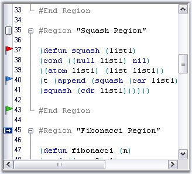

Essential Edit enables users to locate a section or a line of a document by using the Bookmarks and Custom Indicators feature like in Visual Studio. This provides quick access to any part of the contents of the Edit Control.
The Edit Control allows any number of custom images or bookmarks to be added to a document.
 Note: At any given point of time, each line can
have only one indicator or bookmark associated with it.
Note: At any given point of time, each line can
have only one indicator or bookmark associated with it.
Displaying Bookmarks
The Edit Control provides an indicator margin for the purpose of displaying the custom indicators or bookmarks. This can be enabled by using the ShowIndicatorMargin property, as shown below.
|
Edit Control Property |
Description |
|
ShowIndicatorMargin |
Gets / sets value indicating whether bookmarks and indicator margins should be visible. |
|
MarkerAreaWidth |
Gets / sets width of marker area. |
|
[C#]
// Displays the Indicator margin. this.editControl1.ShowIndicatorMargin = true;
// Sets the width of the Indicator margin. this.editControl1.MarkerAreaWidth = 20; |
|
[VB.NET]
' Displays the Indicator margin. Me.editControl1.ShowIndicatorMargin = True
' Sets the width of the Indicator margin. Me.editControl1.MarkerAreaWidth = 20 |
Customizing Bookmarks
You can either display the default bookmark image (like in Visual Studio.NET) or display custom images as indicators. This can be done by making use of the following methods of the Edit Control.
|
Edit Control Method |
Description |
|
BookmarkToggle |
Sets bookmark to the current line. |
|
BookmarkAdd |
Sets bookmark at the specified line. |
|
BookmarkRemove |
Removes bookmark at the specified line. |
|
BookmarkGet |
Gets bookmark at the specified line. |
|
BookmarkNext |
Goes to the next bookmark. |
|
BookmarkPrevious |
Goes to the previous bookmark. |
|
BookmarkClear |
Clears all the bookmarks. |
|
[C#]
// Sets bookmark at the specified line. this.editControl1.BookmarkAdd(this.editControl1.CurrentLine);
// Removes bookmark at the specified line. this.editControl1.BookmarkRemove(this.editControl1.CurrentLine);
this.editControl1.BookmarkRemove(this.editControl1.CurrentLine);
// Draw the bookmark with custom look and feel specified in the BrushInfo object. BrushInfo brushInfo = new BrushInfo(GradientStyle.ForwardDiagonal, Color.IndianRed, Color.Ivory); this.editControl1.BookmarkAdd(this.editControl1.CurrentLine, brushInfo);
// Get the Bookmark object of the current line. IBookmark bookmark = this.editControl1.BookmarkGet(this.editControl1.CurrentLine); |
|
[VB.NET]
' Sets bookmark at the specified line. Me.editControl1.BookmarkAdd(Me.editControl1.CurrentLine)
' Removes bookmark at the specified line. Me.editControl1.BookmarkRemove(Me.editControl1.CurrentLine)
' Draw the bookmark with custom look and feel specified in the BrushInfo object. Dim brushInfo As BrushInfo = new BrushInfo(GradientStyle.ForwardDiagonal, Color.IndianRed, Color.Ivory) Me.editControl1.BookmarkAdd(Me.editControl1.CurrentLine, brushInfo)
' Get the Bookmark object of the current line. Dim bookmark As IBookmark = Me.EditControl1.BookmarkGet(Me.EditControl1.CurrentLine) |
Setting Bookmarks
Bookmarks can be set and removed by using the below given methods.
|
Edit Control Method |
Description |
|
SetCustomBookmark |
Sets custom bookmark for the desired line. |
|
RemoveCustomBookmark |
Removes the custom bookmark from the desired line. |
Note: To clear the bookmarks set by using the
SetCustomBookmark method, you must use the BookmarkClear method with its bool
argument set as True.
The bookmarks set by using the SetCustomBookmark method, do not respond to the BookmarkNext and BookmarkPrevious methods automatically. In order to enable this, you have to set the UseInBookmarkSearch property of the custom bookmark to True.
|
[C#]
// Sets custom bookmarks and enables it to respond to BookmarkNext and BookmarkPrevious methods. ICustomBookmark customBookmark = this.editControl1.SetCustomBookmark(this.editControl1.CurrentLine, new BookmarkPaintEventHandler(CustomBookmarkPainter)); customBookmark.UseInBookmarkSearch = true;
// Removes the bookmark of the current line. ICustomBookmark customBookmark = this.editControl1.RemoveCustomBookmark(this.editControl1.CurrentLine, BookmarkPaintEventHandler(CustomBookmarkPainter)); |
|
[VB.NET]
' Sets custom bookmarks and enables it to respond to BookmarkNext and BookmarkPrevious methods. Dim customBookmark As ICustomBookmark = Me.editControl1.SetCustomBookmark(Me.editControl1.CurrentLine, New BookmarkPaintEventHandler(CustomBookmarkPainter)) customBookmark.UseInBookmarkSearch = True
' Removes the bookmark of the current line. Dim customBookmark As ICustomBookmark = Me.editControl1.RemoveCustomBookmark(Me.editControl1.CurrentLine, BookmarkPaintEventHandler(CustomBookmarkPainter)) |
Setting Tooltips for Bookmarks
Tooltips can be set for bookmarks and customized by using the below given properties.
|
Edit Control Property |
Description |
|
ShowBookmarkTooltip |
Specifies whether the tooltip of the bookmark is shown. |
|
BookmarkTooltipBackgroundBrush |
Gets / sets brush for bookmark tooltip background. |
|
BookmarkTooltipBorderColor |
Specifies the color of the bookmark tooltip form border. |
|
[C#]
// Shows the tooltip of the bookmark. this.editControl1.ShowBookmarkTooltip = true;
// Gets or sets brush for bookmark tooltip background. this.editControl1.BookmarkTooltipBackgroundBrush = new Syncfusion.Drawing.BrushInfo(Syncfusion.Drawing.PatternStyle.Percent05, System.Drawing.SystemColors.WindowText, System.Drawing.Color.Gold);
// Specify the color of the bookmark tooltip form border. this.editControl1.BookmarkTooltipBorderColor = System.Drawing.Color.Crimson; |
|
[VB.NET]
' Shows the tooltip of the bookmark. Me.editControl1.ShowBookmarkTooltip = True
' Gets or sets brush for bookmark tooltip background. Me.editControl1.BookmarkTooltipBackgroundBrush = New Syncfusion.Drawing.BrushInfo(Syncfusion.Drawing.PatternStyle.Percent05, System.Drawing.SystemColors.WindowText, System.Drawing.Color.Gold)
' Specify the color of the bookmark tooltip form border. Me.editControl1.BookmarkTooltipBorderColor = System.Drawing.Color.Crimson |

Figure 24: Edit Control with Custom Bookmarks
A sample which illustrates the above features is available in the below sample installation path.
..\My Documents\Syncfusion\EssentialStudio\Version Number\Windows\Edit.Windows\Samples\2.0\Text Navigation\CustomBookmarksDemo